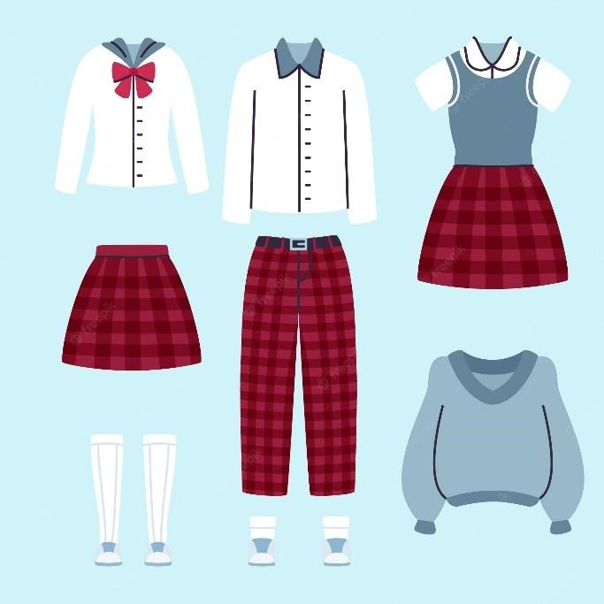

CetSolutions
El uniforme es algo esencial para las escuelas tanto como primarias y secundarias, pero llegar a la preparatoria ya es otro caso ya que esta se puede ver mal vistas ya que para los ingresados que entraron en la pandemia tuvieron que estar en clases en línea y no había problema en eso pero al entrar a presencial el uniforme no era tan necesario y así mismo pasaron y llegaron los nuevos ingresados y los alumnos que entraron en la pandemia fueron obligados a usar el uniforma tan solo 1 año antes de salir y fue algo que molesto mucho a otros no solo que era obligatorio si no en los precios en los que estos uniformes eran vendidos y injusto que te reporten en las entradas a quienes no tengan el uniforme. Opcion por parte de todos: Que para los de 1 y 3 semestre usen el uniforme ya que ellos pasaran más tiempo en la prepa pero que para los que ya van de salida no tenía que ser obligatorio ya que es un gasto de dinero esto es algo malo para los de los últimos semestres ya que este nos hacen gastar dinero en el uniforme con un precio exagerado y que solo sea para 1 año y esto es muy disgusto para todos los alumnos y esto que obligan que tengamos pantalón gris (aunque no sea de la escuela ) y la camisa blanca y si no tienes una de estas tengamos que dar la tarjeta de acceso del alumno al guardia y que nos ponga un reporte solo por eso. innecesario. Seguridad en las entradas y salidas para ambos turnos: -La seguridad es algo muy importante en un colegio, pero hay quienes ven innecesario eso, pero lo que no saben es de que es muy importante ya que en las entradas para los alumnos de la mañana el día está muy oscuro y no se ve nada y podría pasar muchas cosas como (robos, secuestros, estafas, tráficos de drogas, etc.)

Solución: tener por lo menos varios policías raleando por los alrededores del plantel y vigilar y proteger a los alumnos en caso de que pase algo.